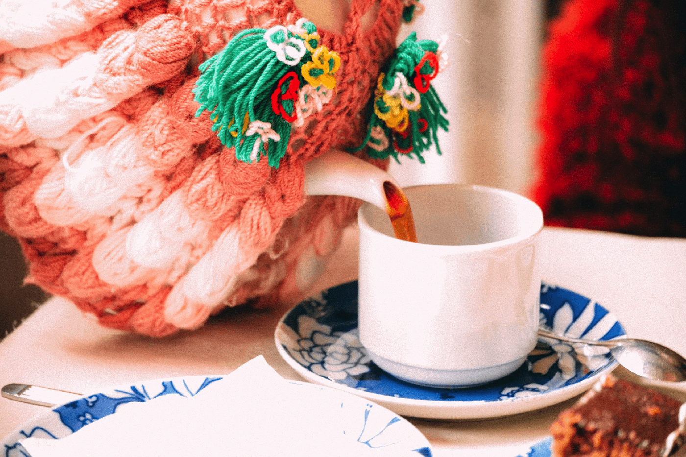

Wil je meer creatieve workshops vinden of zoek je juist meer deelnemers voor jouw workshops?
Ik ben een website aan het maken die beide op kan lossen.
Er worden veel workshops georganiseerd om te leren haken, breien en vilten. Maar zowel workshops als deelnemers zijn niet altijd even makkelijk te vinden. Ik ben daarom bezig met een website waarop dat wel lukt.
Ik ben Sander, creatieveling, webontwikkelaar en zoon van José Visser, eigenaresse van @ateliersopra.
Als je geïnteresseerd bent in het plaatsen of vinden van workshops, laat dan hieronder je e-mailadres achter om op te hoogte te blijven.